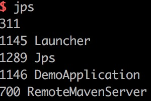
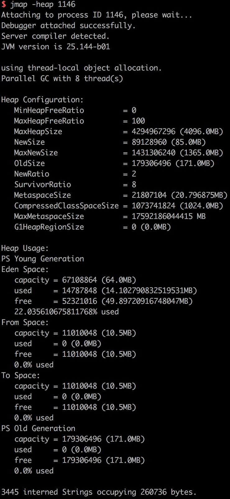
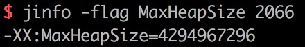
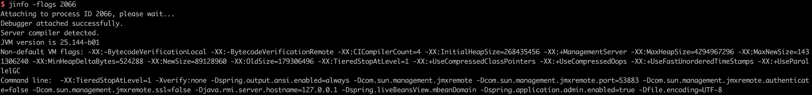
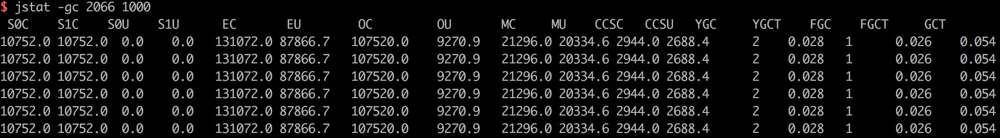
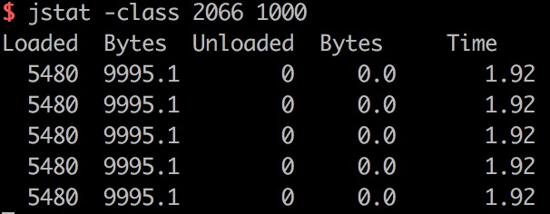
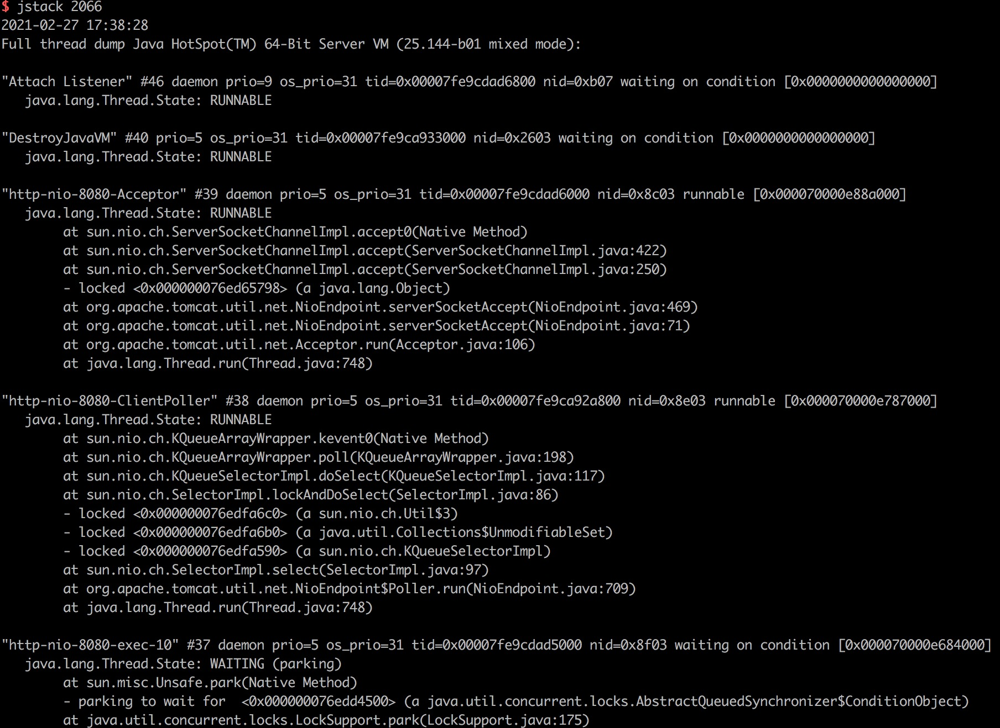

常用命令
jps
查看java进程

jmap
jmap -heap PID
查看堆内存信息

jmap -dump:format=b,file=heap.hprof PID
dump出堆内存信息
jinfo
jinfo -flag name PID
查看进程的某个属性

jinfo -flags PID
查看被赋值的参数

jstat
jstat -gc PID 1000
查看gc情况，每1000ms输出一次,分别表示Survivor0区的大小，Survivor1区的大小，Survivor0区已使用空间，Survivor1区已使用空间，Eden区的大小，Eden区已使用空间，老年代的大小，老年代已使用空间，元空间的大小，元空间已使用空间，压缩类的大小，压缩类已使用空间，Young GC次数，Young GC总耗时，Full GC次数，Full GC总耗时，GC总耗时，耗时的单位为秒。

jstat -class PID 1000
查看类加载情况，每1000ms输出一次

jstack PID
查看进程的堆栈信息

java -XX:+PrintFlagsFinal
查看jvm配置
参数之-XX
Boolean类型
格式:-XX:[+-]
+或-表示启用或者禁用 如-XX:+UseConcMarkSweepGC 表示启用CMS类型的垃圾回收器，-XX:+UseG1GC 表示启用G1类型的垃圾回收器
非Boolean类型
格式:-XX
= 表示name属性的值是value 如:-XX:MaxGCPauseMillis=500
常用参数
-Xms4096M
初始堆大小,等同于-XX:InitialHeapSize=4096M
-Xmx4096M
最大堆大小，等同于-XX:MaxHeapSize=4096M，为了避免jvm在gc后调整大小，一般Xms和Xmx设置同样的值
-XX:MinHeapFreeRatio=40
默认40，表示空余堆内存小于40%时，JVM就会增大堆直到-Xmx的值，一般不设置
-XX:MaxHeapFreeRatio=70
默认70，表示空余堆内存大于70%时，JVM会减少堆直到-Xms的值，一般不设置
-Xmn1024M
新生代大小
-Xss128k
每个线程的堆栈大小，一般小的应用，如果栈不是很深，128k是够用的，大的应用建议使用256k。这个选项对性能影响比较大，不要盲目设置，如果设置过小，可能会出现栈溢出，特别是在该线程内有递归、大的循环时出现溢出的可能性更大，如果该值设置过大，就会影响到创建栈的数量，如果是多线程的应用，就会出现内存溢出的错误。
-XX:MetaspaceSize=128M
初始元空间大小
-XX:MaxMetaspaceSize=256M
最大元空间大小
-XX:SurvivorRatio=8
新生代中Eden区与Survivor区的比值，Survivor区默认为1，比如8表示(S0+S1):Eden=2:8，即一个S区占整个新生代的1/10
-XX:NewRatio=4
老年代与新生代的比值，新生代默认为1，比如4表示新生代:老年代=1:4，也就是新生代占整个堆内存的1/5，Xms=Xmx并且设置了Xmn的情况下，该参数不需要进行设置
-XX:MaxTenuringThreshold=6
对象进入老年代的年龄阈值，各个垃圾收集器不一样，Serial和ParNew GC默认是15，如果设置为0的话，则新生代对象不经过Survivor区，直接进入年老代。对于老年代比较多的应用，可以提高效率。如果将此值设置为一个较大值，则新生代对象会在Survivor区进行多次复制，这样可以增加对象在新生代的存活时间，增加在新生代被回收的概率。
-XX:+UseParallelGC
新生代使用Parallel收集器
-XX:ParallelGCThreads=4
并行垃圾回收的线程数，一般与机器处理器数量相等，对Parallel和CMS都有效
-XX:+UseParallelOldGC
老年代使用ParallelOld收集器
-XX:+UseConcMarkSweepGC
老年代使用CMS收集器
-XX:+UseG1GC
新生代与老年代使用G1收集器
-XX:+HeapDumpOnOutOfMemoryError
堆内存溢出时，生成dump文件
-XX:HeapDumpPath=heap.hprof
堆内存溢出时，在当前目录生成一个heap.hprof文件
打印gc日志
-XX:+PrintGCDetails -XX:+PrintGCTimeStamps -XX:+PrintGCDateStamps -Xloggc:gc.log
-XX:+DisableExplicitGC
使System.gc()失效，System.gc()会间接导致堆外内存的回收，如果禁用，可能导致Netty等框架里无法回收堆外内存
-XX:+CMSParallelRemarkEnabled
开启并行标记,节省新生代标记时间
-XX:CMSInitiatingOccupancyFractio=70
老年代使用了指定阈值的内存时，触发Full GC，默认为-1时，以((100 - MinHeapFreeRatio) + (double)( CMSTriggerRatio * MinHeapFreeRatio) / 100.0) / 100.0 为阈值，
-XX:+UseCMSInitiatingOccupancyOnly
只使用设定的回收阈值(CMSInitiatingOccupancyFractio)，如果不指定,JVM仅在第一次使用设定值，后续则自动调整
-XX+UseCMSCompactAtFullCollection
CMS不会移动内存的，因此非常容易产生碎片，导致内存不够用，用它开启对年老代的内存压缩。
-XX:LargePageSizeInBytes=128m
堆的分页页面大小
-XX:UseFastAccessorMethods
原始类型get,set方法转化成本地方法，是一种优化
-XX:+UseAdaptiveSizePolicy
并行收集器会自动选择年轻代区大小和相应的Survivor区比例，以达到目标系统规定的最低响应时间或者收集频率等
-XX:G1HeapWastePercent=10
默认是10%，如果G1并发标记阶段可回收的空间小于10%，则不会触发MixedGC。
-XX:MaxGCPauseMillis=200ms
G1最大停顿时间，太小的话（比如50ms）就会导致出现G1跟不上垃圾产生的速度，最终退化成Full GC。所以对这个参数的调优是一个持续的过程，逐步调整到最佳状态。
-XX:ConcGCThreads=4
G1并发标记阶段使用的线程数量